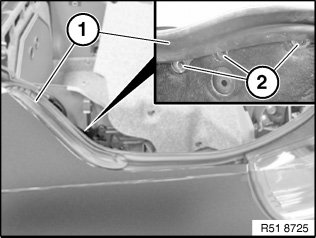
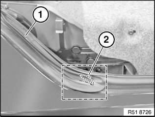
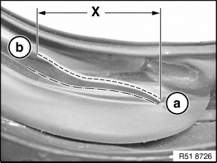

Trunk / Liftgate Weatherstrip: Service and Repair
51 71 360 Removing And Installing/Replacing Seal For Tailgate

IMPORTANT: To prevent water ingress, removed sealing may not be reused.
Necessary preliminary work:
- Remove outer left and right weatherstrip
- Remove left and right luggage compartment wheel arch panels

The right side is removed in the same way as the left side.
Unfasten screws (2).
Feed out front seal (1) and remove by pulling backwards.
Reposition convertible top module if necessary to completely remove seal (1).
Installation note:
- Observe fitting of seals

Replacement
To avoid water entering the vehicle interior, the new seal (1) must be modified as follows:
Remove marked section of lip (2).
(Larger frame section, see next step)

Dimension "X" = 40 mm
Cut section in direction "a" -> "b" with sharp knife.
WARNING:
- The seal itself must not be damaged.
- Therefore make sure you leave a bridge between the cut at the lip (dashed line) and the transition of the lip to the seal (dot-dash line).